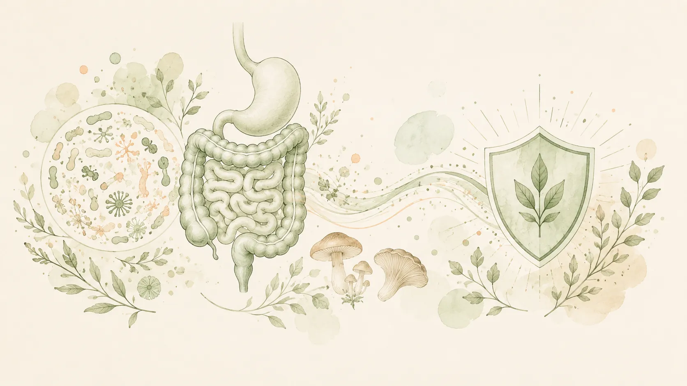
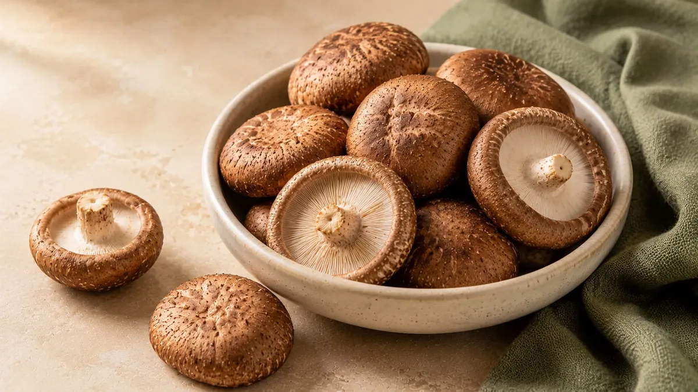
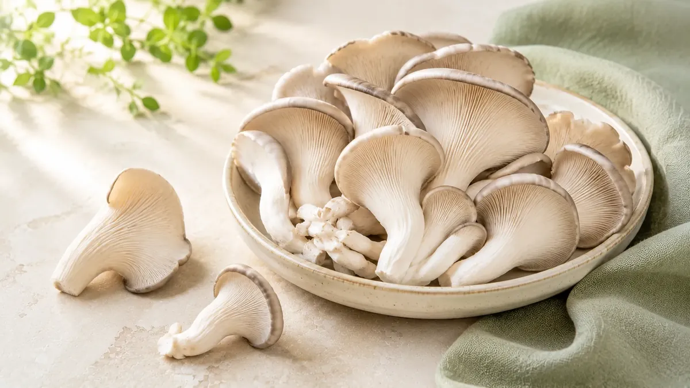
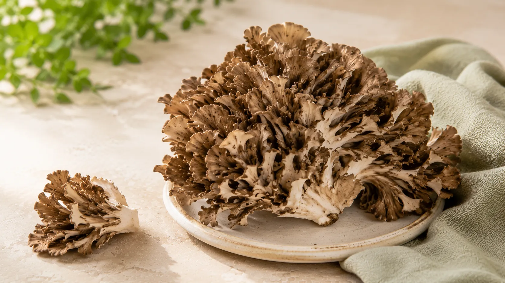
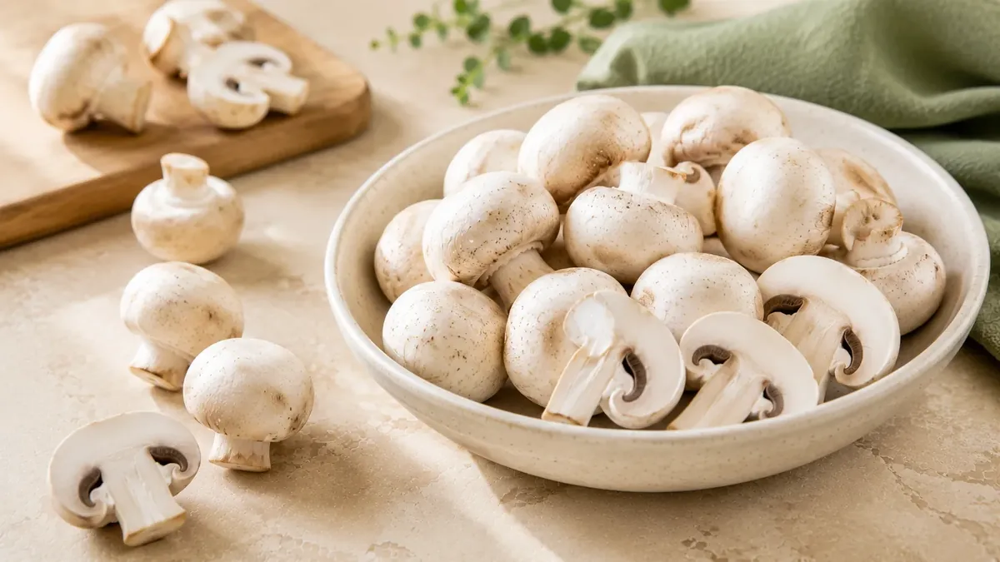

Mushrooms have an unusual reputation.
In the kitchen, they are simply vegetables—or more accurately, fungi—with a savoury flavour and meaty
texture. But in nutrition research, mushrooms are also studied for compounds such as β-glucans and other
polysaccharides, which may interact with immune pathways and the gut microbiome.
That does not mean eating one bowl of mushrooms will suddenly “boost” your immunity.
The more useful question is: which mushrooms are interesting from an immune and gut-health
perspective, and how can you realistically include them in your diet?
First, How Are the Gut and Immune System Connected?
The gut is more than a place where food is digested. It contains a large and complex community of
microorganisms, collectively called the gut microbiota.
Diet can influence this microbial community. Researchers are particularly interested in carbohydrates
that escape digestion in the upper gastrointestinal tract and can interact with or be fermented by
gut microbes.
Mushroom cell walls contain compounds including chitin and glucans. Research reviews suggest that
mushroom polysaccharides may influence gut microbial composition and fermentation products, but the
effects vary by mushroom species, preparation, dose, and study design.
There is also growing research interest in β-glucans because of their interaction with immune
pathways. However, β-glucans differ structurally depending on their source, and findings from a
purified extract cannot automatically be applied to every mushroom or every serving of mushroom
food.
Think of mushrooms as one useful part of a varied diet—not as an immunity shortcut.

5 Mushrooms Worth Knowing
1
Shiitake: The Most Interesting All-Rounder
Shiitake has a deep, savoury flavour and is one of the most widely discussed edible mushrooms in
nutrition research.
Like other mushrooms, shiitake contains polysaccharides, including glucans. Specific
shiitake-derived compounds have been investigated for immune-modulating effects, although
research involving isolated compounds or supplements should not be treated as proof that an
ordinary shiitake meal will produce the same clinical effect.
From a practical point of view, shiitake is easy to add to:
- soups,
- stir-fries,
- noodles,
- fried rice,
- broths.
Why it stands out: a combination of culinary versatility and
significant research interest.
Best for: people who want an everyday food
rather than a supplement-focused approach.

2
Oyster Mushroom: A Gut-Friendly Everyday Choice
Oyster mushrooms are affordable, widely available in many places, and easy to cook.
Research has examined the nondigestible carbohydrates in oyster mushrooms, including chitin and
glucans, for possible prebiotic interactions with gut microorganisms. Reviews describe promising
findings, although more human clinical research is needed before making specific
disease-prevention or treatment claims.
Their soft texture also makes them easy to use in:
- mushroom stir-fries,
- curries,
- wraps,
- soups,
- grilled dishes.
Why it stands out: accessible, versatile, and interesting from a
mushroom-fibre and gut-microbiota research perspective.
Best for: regular
home cooking.

3
Maitake: Interesting, but Don't Believe Every Claim
Maitake, also known as “hen of the woods,” has a layered, feathery appearance and is often
discussed in the functional mushroom category.
Maitake β-glucan preparations have been studied for immune effects. But there is an important
distinction between eating maitake as food and consuming a concentrated extract used in a
research study.
Those two things are not automatically equivalent.
That distinction matters because online articles often take research on concentrated mushroom
compounds and turn it into much broader claims about the whole mushroom.
Why it stands out: one of the more researched mushrooms in the
immune-modulation field.
Best for: culinary variety and people curious about
less common edible mushrooms.

4
Button Mushrooms: Don't Ignore the Everyday Option
Button mushrooms may not sound as exotic as shiitake or maitake, but that does not make them
nutritionally irrelevant.
Research has also investigated β-glucans from Agaricus bisporus, the species that includes white
button and related common cultivated mushrooms. A 2024 laboratory study, for example,
investigated how β-glucans in whole mushroom powder interacted with immune-cell processes after
simulated digestion. This is interesting mechanistic evidence, not proof that eating button
mushrooms prevents illness.
Their biggest practical advantage is simple: they are easy to find and easy to use regularly.
Add them to:
- omelettes,
- sandwiches,
- pasta,
- curries,
- soups,
- stir-fries.
Why it stands out: affordability and
accessibility.
Best for: making mushrooms a regular part of meals.

5
UV-Exposed Mushrooms: The Vitamin D Angle
This is slightly different from choosing a particular mushroom species.
Mushrooms can contain vitamin D2, and their vitamin D content can increase substantially when
they are exposed to ultraviolet light. However, vitamin D levels vary widely depending on
species and UV exposure, so not every pack of mushrooms is automatically a rich vitamin D
source.
Vitamin D is involved in normal immune function, but the broader evidence on nutrition and
immunity supports adequate overall nutrition rather than relying on a single “immune-boosting”
food.
If vitamin D is your reason for buying mushrooms, check whether the package specifically mentions
UV exposure or vitamin D content.
Why it stands out: potentially useful dietary vitamin D2,
depending on how the mushrooms were grown or treated.

So, Which Mushroom Is Best?
Scientifically there is no single best mushroom for every goal.
The most practical choice depends on what you value, such as availability, flavour, variety, or the type of nutrition research you're interested in.
| Your Priority |
Practical Choice |
| Everyday availability |
Button mushroom |
| Gut-health research interest |
Oyster mushroom |
| Strong savoury flavour + research interest |
Shiitake |
| Functional-mushroom research interest |
Maitake |
| Dietary vitamin D2 |
UV-exposed mushrooms |
The larger lesson is that variety is more useful than searching for one magical mushroom.
Different mushroom species have different compositions, and research findings cannot always be
transferred from one species—or one purified extract—to another.
How to Eat More Mushrooms Without Making It Complicated
You do not need mushroom powders, complicated drinks, or an expensive supplement routine to include
mushrooms in your diet.
Start with food.
Add oyster mushrooms to a stir-fry, shiitake to soup or noodles, and button mushrooms to breakfast,
pasta, or curry. Rotate varieties when they are available and affordable.
The way the complete meal is prepared also matters. A mushroom dish cooked with vegetables, legumes,
whole grains, or another protein source is nutritionally different from deep-fried mushrooms covered in
batter and sauce.
The mushroom matters, but the whole meal matters too.
Watch Out for the Word “Boost”.
The phrase “boosts immunity” appears frequently in food marketing, but the immune system is complex.
Adequate nutrition is important for normal immune function, and nutrients such as vitamin D, zinc,
selenium, iron, vitamin C, and protein all play roles in immune-cell growth and function. No single food
creates a complete immune system on its own.
Research into mushroom β-glucans is scientifically interesting, but evidence from cells, animals,
concentrated extracts, or specific clinical preparations should not be converted into promises that an
ordinary mushroom dish will prevent or cure disease.
✦
The Bottom Line
Mushrooms are worth eating, but not because they are magic.
Shiitake and maitake are interesting for their history of research on mushroom
polysaccharides. Oyster mushrooms are a practical choice with interesting research around
nondigestible carbohydrates and the gut microbiota. Button mushrooms are affordable, accessible,
and should not be dismissed simply because they are common. UV-exposed mushrooms can offer a
different advantage through higher vitamin D2 content.
The smartest approach is not to search for one mushroom that promises to “boost” immunity.
Eat a varied diet, include different mushroom varieties when practical, and enjoy them for
what the evidence can reasonably support: nutritious foods containing fibre-like carbohydrates
and bioactive compounds that continue to be studied for their relationship with gut and immune
health.